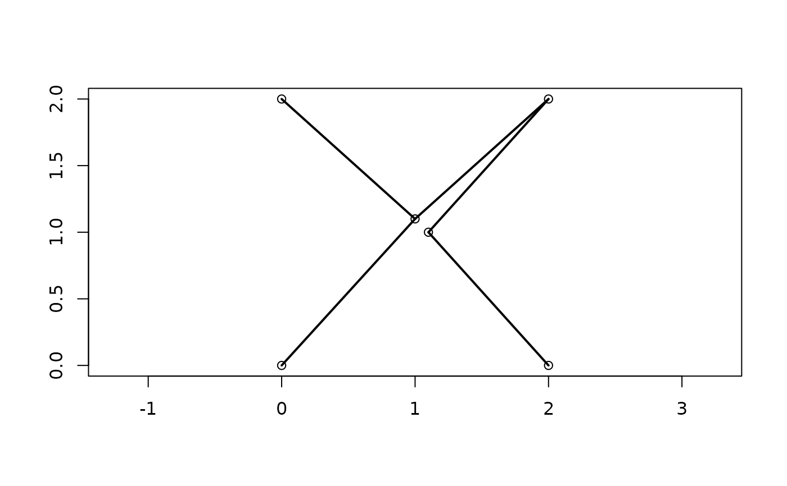

Calculate or plot the minimum spanning tree of a distance matrix.
MSTEdges(distances, plot = FALSE, x = NULL, y = NULL, ...)
MSTLength(distances, mst = NULL)Either a matrix that can be interpreted as a distance
matrix, or an object of class dist.
Logical specifying whether to add the minimum spanning tree to an existing plot.
Numeric vectors specifying the X and Y coordinates of each
element in distances. Necessary only if plot = TRUE.
Additional parameters to send to [lines()].
Optional parameter specifying the minimum spanning tree in the
format returned by MSTEdges(); if NULL, calculated from distances.
MSTEdges() returns a matrix in which each row corresponds to an
edge of the minimum spanning tree, listed in non-decreasing order of length.
The two columns contain the indices of the entries in distances that
each edge connects, with the lower value listed first.
MSTLength() returns the length of the minimum spanning tree.
Gower JC, Ross GJS (1969). “Minimum spanning trees and single linkage cluster analysis.” Journal of the Royal Statistical Society. Series C (Applied Statistics), 18(1), 54--64. doi: 10.2307/2346439 .
Slow implementation returning the association matrix of the minimum spanning
tree: ape::mst().
# Corners of an almost-regular octahedron
points <- matrix(c(0, 0, 2, 2, 1.1, 1,
0, 2, 0, 2, 1, 1.1,
0, 0, 0, 0, 1, -1), 6)
distances <- dist(points)
mst <- MSTEdges(distances)
MSTLength(distances, mst)
#> [1] 8.496869
plot(points[, 1:2], ann = FALSE, asp = 1)
MSTEdges(distances, TRUE, x = points[, 1], y = points[, 2], lwd = 2)
